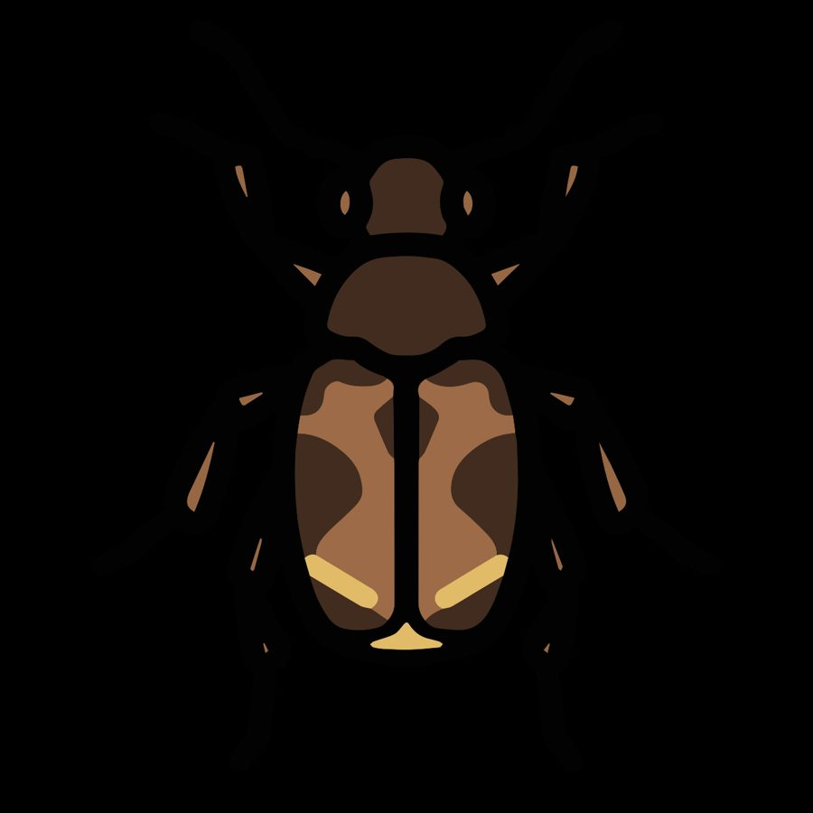

ढोराCowpea Weevil
Callosobruchus maculatus · Chrysomelidae · INS-0164

- Scientific name वैज्ञानिक नाम
- Callosobruchus maculatus (Fabricius, 1775)
- Family कुल
- Chrysomelidae
- Hindi हिंदी
- ढोरा
- Local names स्थानीय नाम
- dhora, dhoora, cowpea weevil, pulse weevil
- Status here यहाँ की स्थिति
- native
- Movement आवागमन
- Resident, here all year
- Known from कहाँ दर्ज
- Others have published records from the wider Awadh–Purvanchal plain, none yet from Basti–Ayodhya अवध–पूर्वांचल से दूसरों के प्रकाशित अभिलेख, बस्ती–अयोध्या से अभी नहीं
- IUCN IUCN
- not evaluated
- Review समीक्षा
- audited and independently read
When to look कब देखें
Present all year. साल भर मौजूद।
Tell it apart from इनसे अलग पहचानें
ढोरा / Cowpea Weevil
Callosobruchus maculatus (Fabricius, 1775) — Chrysomelidae
ढोरा — लोबिया, अरहर और अन्य दालों के दानों में छेद कर देने वाला छोटा भृंग। दाने को खोखला कर देता है और सब्ज़ी में मिलकर खा जाता है। घर के भंडार में सबसे आम कीड़ा है।
Quick Identification त्वरित पहचान
| Feature | Description |
|---|---|
| Adult length | 2–3 mm |
| Body colour | Brown to blackish, with pale patches |
| Elytra (wing covers) | Spotted pattern; surface punctate |
| Thorax | Rounded; densely punctate |
| Legs | Reddish-brown |
| Exit holes in seeds | Circular, 1–2 mm diameter |
| Larva colour | Creamy white |
| Larva length | 4–5 mm |
Field tip: Look for round exit holes in stored cowpea or pigeon pea seeds. Living adults are found in grain stores and granaries. The beetle is tiny and fast; best observed in stored seeds.
हिंदी — कैसे पहचानें: दाने पर बिल्कुल गोल बिल, अंदर सफ़ेद गिड़ार। लोबिया या अरहर में छेद।
Morphology आकारिकी
Biometrics:
| Measurement | Range |
|---|---|
| Adult length | 2–3.5 mm |
| Adult width | 1.5–2.5 mm |
| Larva length | 4–5 mm |
| Pupa length | 2.5–3 mm |
Adult: Tiny beetle, brown to blackish, with characteristic spotted elytra. Thorax rounded, densely punctate. Legs reddish-brown. Rostrum short, broad. Sexual dimorphism slight; females larger, with larger fifth abdominal segment.
Larva: Cream-coloured, elongate, barrel-shaped, with a dark head. Found inside legume seeds, usually one larva per seed.
Pupa: Brown, relatively smooth; formed within the seed.
हिंदी: बहुत छोटा भृंग, काला-भूरा, दानों को खोखला करता है। लार्वा सफ़ेद, दाने के अंदर।
Behaviour & Ecology व्यवहार और पारिस्थितिकी
The Cowpea Weevil is one of the most destructive pests of stored legumes in tropical regions. Females lay eggs on the seed surface; the larva burrows into the seed and develops entirely within it, feeding on the cotyledon. Multiple overlapping generations develop in stored grain, with development time as short as 3–4 weeks under warm conditions. The species is cosmopolitan in stored legumes and also infests seeds in the field and during drying. It causes severe losses in grain stores and is particularly problematic in smallholder storage systems without modern facilities.
The beetle has a high reproductive rate and shows no diapause; populations can explode rapidly in untreated grain. The weevil is an important stored-grain pest regulated under plant health laws in many countries.
हिंदी: दाने में अंडा देती है, अंदर लार्वा पलता है, बड़ा होकर निकल जाता है। भंडार में बहुत तेजी से बढ़ता है।
Life Cycle / Phenology जीवन चक्र
| Stage | Duration | Notes |
|---|---|---|
| Egg | 5–7 days | Laid on seed surface |
| Larva | 18–25 days | Inside seed; single larva per seed typically |
| Pupa | 5–7 days | Within seed |
| Adult | 10–20 days | Emerges through circular hole |
| Cycle | 30–40 days | Multiple generations in storage |
हिंदी: अंडा एक हफ़्ता, गिड़ार 3 हफ़्ते, प्यूपा एक हफ़्ता। गर्मी में 3–4 पीढ़ियाँ।
Host Plants or Prey आहार
Primary hosts:
- Cowpea (Vigna unguiculata)
- Pigeon pea / arhar (Cajanus cajan)
- Chickpea (Cicer arietinum)
- Mung bean (Vigna radiata)
- Black gram (Vigna mungo)
The weevil is highly polyphagous within legumes and will develop on any stored legume seed.
Predators / Natural Enemies शत्रु
- Parasitoid wasps: Pteromalus spp., Uscana spp. (important natural enemies)
- Chalcid wasps: parasitise larvae and pupae
- Predatory beetles: some species prey on eggs and adults
- Entomopathogenic fungi: rarely significant in dry storage
Agricultural / Human Relevance कृषि प्रासंगिकता
The Cowpea Weevil is one of the most economically important stored-grain pests in tropical and subtropical regions, particularly in smallholder farming systems. It causes substantial post-harvest losses, with infested grains becoming unsuitable for consumption (both nutritionally and aesthetically). Control is primarily through storage management: airtight containers, low temperature, reduced moisture, and fumigation with inert gases (carbon dioxide) or traditional methods (neem leaves, ash, groundnut oil).
Chemical control: Insecticides are widely used but resistance has developed in many populations. Organic storage methods using neem oil, garlic extract, or diatomaceous earth are traditional and increasingly popular.
Expected Locally स्थानीय रूप से अपेक्षित
Not a field record. Written from published accounts for eastern Uttar Pradesh. No confirmed local sighting yet — if you have seen it, that is what the atlas needs.
अभी तक स्थानीय पुष्टि नहीं। यह विवरण प्रकाशित स्रोतों से है, किसी अवलोकन से नहीं।
Expected in grain stores and granaries throughout Basti and Ayodhya districts wherever cowpea, pigeon pea, or other legumes are stored. The beetle is present year-round in storage but particularly abundant in newly stored grain during post-harvest months. A photograph of infested seeds or adult weevils with date would confirm presence.
Distribution वितरण
Global range: Tropical and subtropical regions worldwide; cosmopolitan in stored legumes.
In India: Throughout India, especially in legume-producing regions.
In Uttar Pradesh: Present in all districts with legume production and storage.
In Basti district / eastern UP: Common wherever cowpea, pigeon pea, or other legumes are stored.
Research Questions शोध प्रश्न
Anyone can investigate these | कोई भी इन प्रश्नों की जाँच कर सकता है
- What is the development time from egg to adult emergence at different temperatures? — Store infested cowpea at various temperatures; record emergence times.
- How many larvae can infest a single cowpea seed before they compete? — Offer eggs and count larvae that successfully develop.
- Does neem leaf powder reduce infestation of stored grain? — Store cowpea with and without neem leaves; compare infestation rates monthly.
- Which parasitoid wasps naturally parasitise cowpea weevil pupae in stored grain? — Collect pupae from infested grain; rear indoors; identify emergent wasps.
- Can airtight containers prevent infestation if sealed immediately after harvest? — Compare sealed versus open storage; check monthly.
Similar Species मिलती-जुलती प्रजातियाँ
| Species | How to tell apart | हिंदी |
|---|---|---|
| Acanthoscelides obtectus (Dried Bean Beetle) | Slightly larger; different host preference (beans vs. legumes); wing pattern differs | बीन भृंग, अलग आकार |
| Other bruchid weevils on legumes | Various; different sizes and colour patterns; but C. maculatus on cowpea is diagnostic | अन्य दाल-भृंग, अलग |
Field rule: Tiny brown beetle with spotted wing covers emerging from round hole in stored cowpea or pigeon pea seeds: Cowpea Weevil (Callosobruchus maculatus).
Taxonomy & Classification वर्गीकरण
Original description. Described by Fabricius in 1775 in Systema Antliatorum as Bruchus maculatus based on specimens from the Indian subcontinent. The genus Callosobruchus was erected by Pit in 1901; the species was transferred to Callosobruchus.
Subspecies. Monotypic — no subspecies are formally recognised.
Family and order placement. Order Coleoptera (beetles), family Chrysomelidae (leaf beetles and seed beetles). The subfamily Bruchinae comprises seed beetles specialised on legumes; Callosobruchus is one of the largest and economically important genera.
Phylogenetic notes. Callosobruchus maculatus is part of a species complex of closely related seed beetles with overlapping host ranges and geographic distributions.
IUCN status rationale. Not evaluated. As a widespread, abundant, and economically damaging species, no conservation assessment is warranted.
Photo Gallery फोटो गैलरी
Photos needed आवश्यक फोटो
- [ ] Adult weevil on stored cowpea (दाने पर भृंग)
- [ ] Exit hole in infested seed (दाने में बिल)
- [ ] Larva inside opened seed (दाने के अंदर लार्वा)
No photos yet — add field photos to media/species/cowpea_weevil/ and run node scripts/sync_photos.js.
References संदर्भ
- Fabricius, J.C. (1775). Systema Antliatorum. Flensburgi et Lipsiae. [original description, as Bruchus maculatus]
- Pit, J.P. (1901). Biologia Centrali-Americana, Coleoptera, Phytophaga, vol. III, part 2. [genus Callosobruchus]
- Southgate, B.J. (1979). Biology of the Bruchidae. Annual Review of Entomology 24: 449–474.
- Credland, P.B. & Dick, K.M. (1987). Reproductive biology of the seed beetle Callosobruchus maculatus. Entomologia Experimentalis et Applicata 44: 157–166.
- ICAR (2018). Handbook of Agricultural Pests in Uttar Pradesh. Directorate of Extension, NDUAT.
- GBIF Occurrence Data — Callosobruchus maculatus, India (2023).
Source file: species/fauna/insects/cowpea_weevil.md